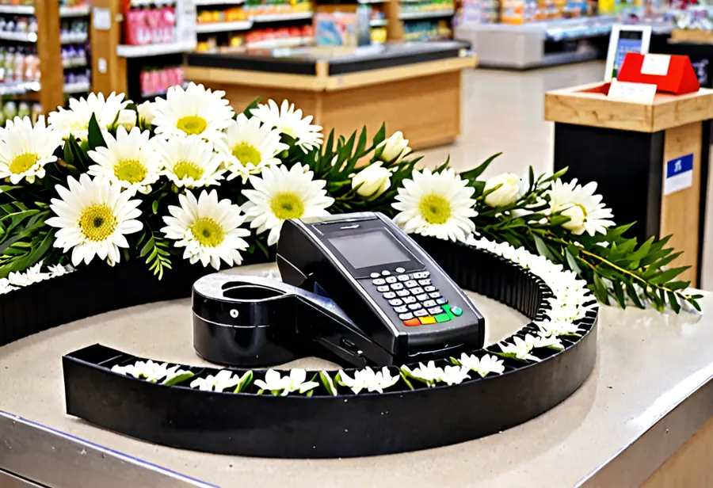
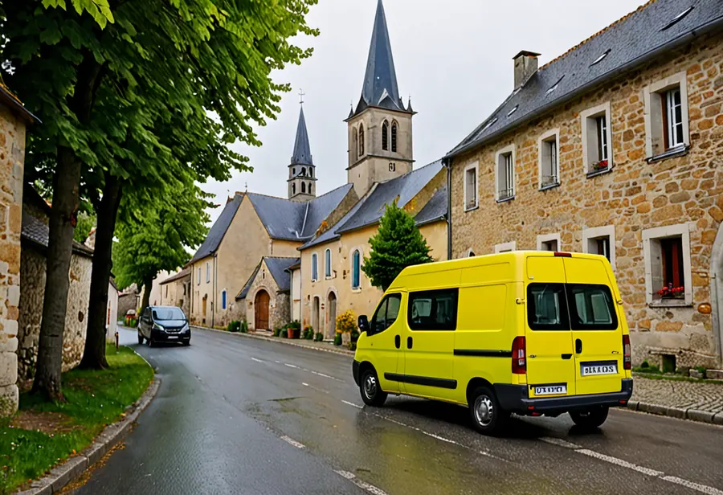

Le prix juste, jusqu’au bout
Une enseigne indépendante de Saint-Ombrage, 14 collaborateurs, un seul magasin. Le dernier achat de la vie ne devrait pas être le plus cher.
Notre histoire
En 1952, Marcel Soubeyrol, quincaillier à Saint-Ombrage, vend ses premiers cercueils au prix des planches, entre les clous et les seaux. Sa maison reste discrète pendant soixante ans.
En 2011, Didier Cassenave la reprend, après trente ans dans la distribution d’électroménager. Il retire la moquette, les fauteuils et le mot « salon », et s’installe en zone commerciale. Les familles attendent debout. Elles attendent moins longtemps.
Depuis, nous n’avons qu’une question pour chaque poste de dépense : qui l’a demandé ?

Comment nous faisons nos prix
| Ce que nous avons retiré | Depuis | Économie par famille |
|---|---|---|
| Le salon d’accueil et ses fauteuils | 2011 | −210 € |
| Le corbillard, remplacé par la camionnette jaune, sauf forfait Prestige | 2014 | −90 € |
| Le responsable qualité | 2012 | −31 € |
| La ligne téléphonique de la facturation : une question sur une facture se pose par courriel | 2023 | −1,40 € |
| La facture papier et son timbre : tout part en PDF, de facturation@au-dernier-prix.example | 1er septembre | −0,87 € |
Nos partenaires
Le pin vient de la Scierie du Bas-Ombrage, le granit de la Marbrerie du Val d’Ombrage. Tous deux livrent à la semaine et facturent à la livraison. Notre comptabilité les règle le jeudi.
Nos factures passent par Encaissia, notre logiciel de gestion, depuis 2019. Notre compte est à la Caisse de l’Ombrage, jusqu’au 16 novembre (voir notre communiqué).
